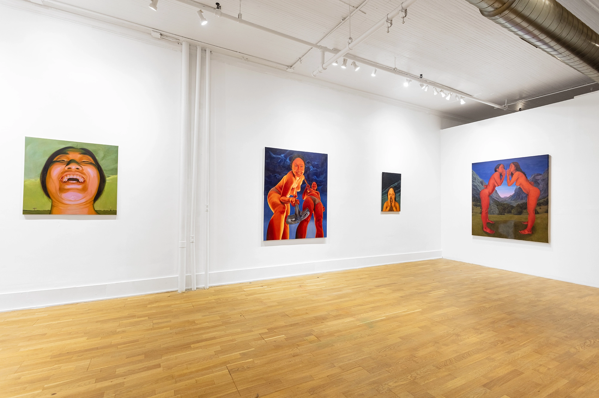
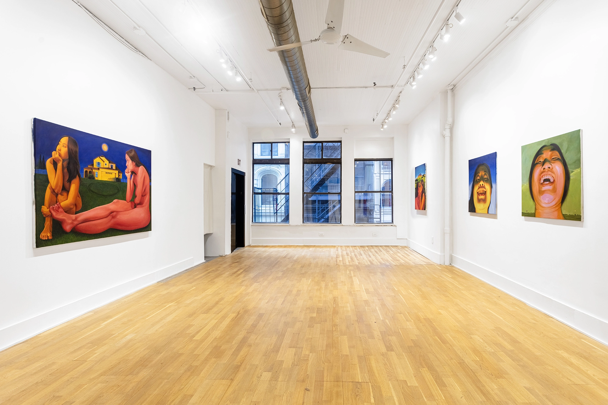
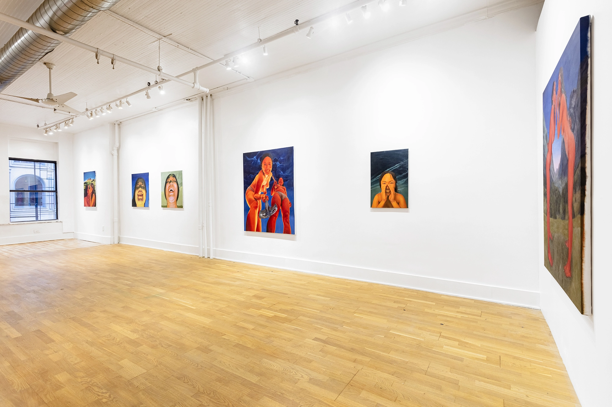
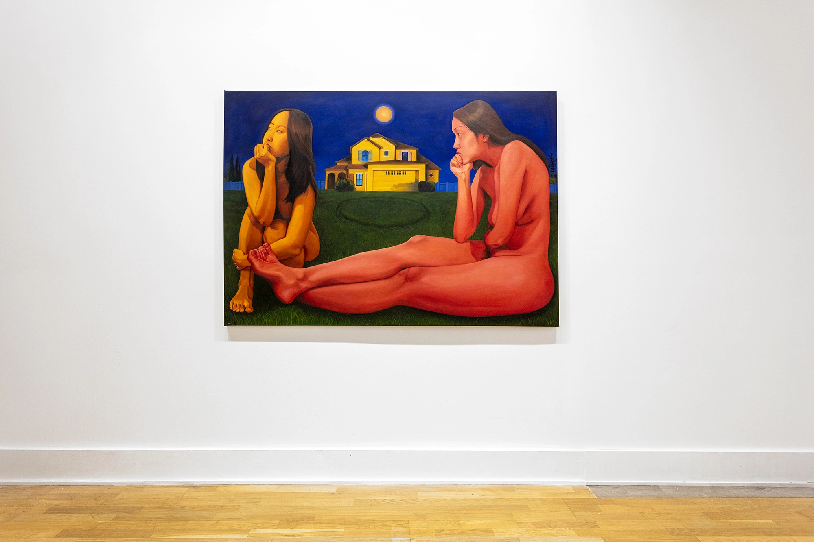
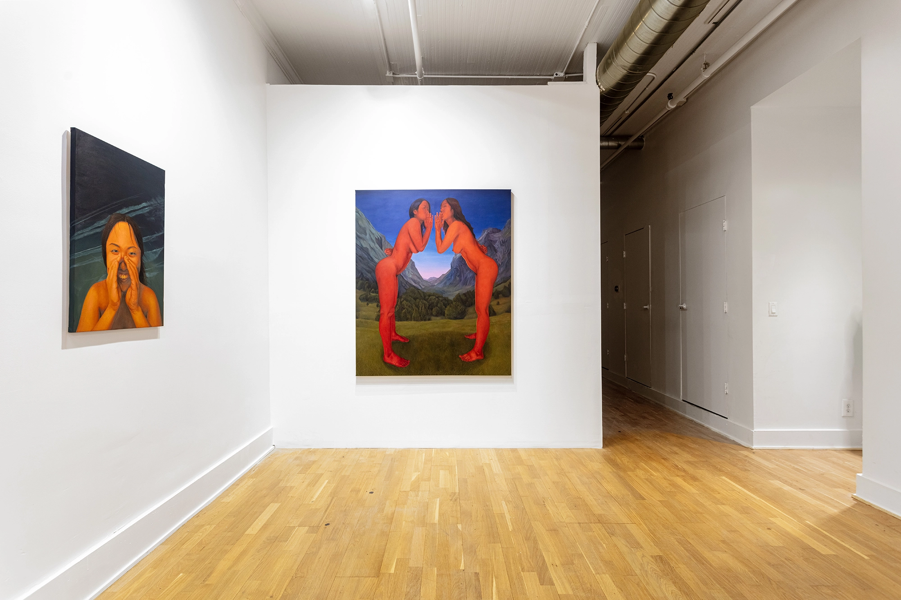
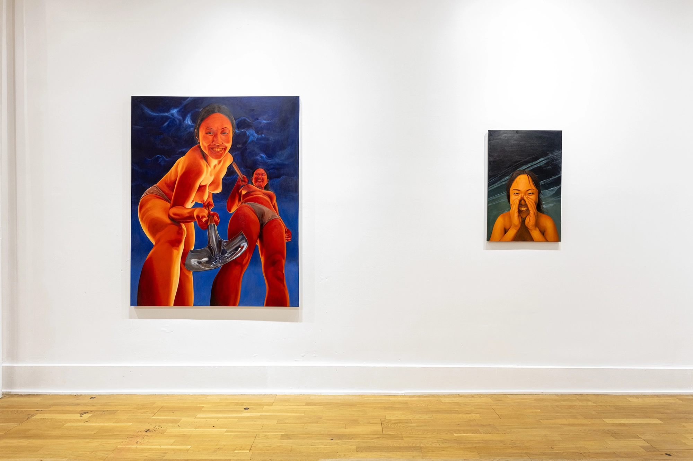
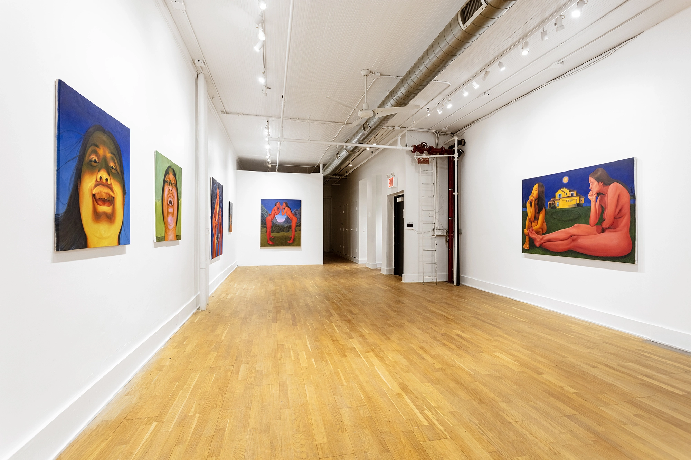
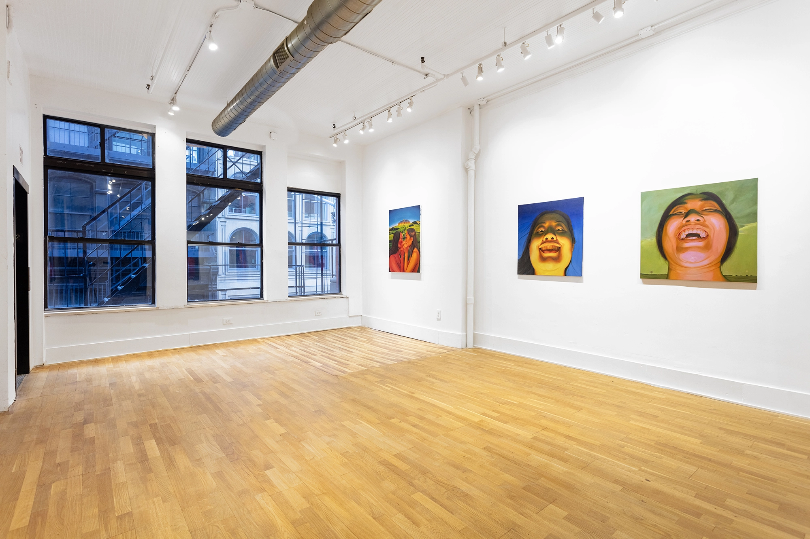
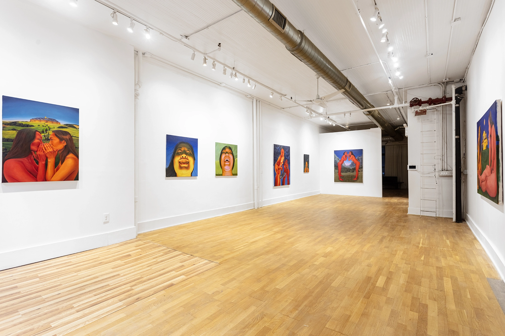
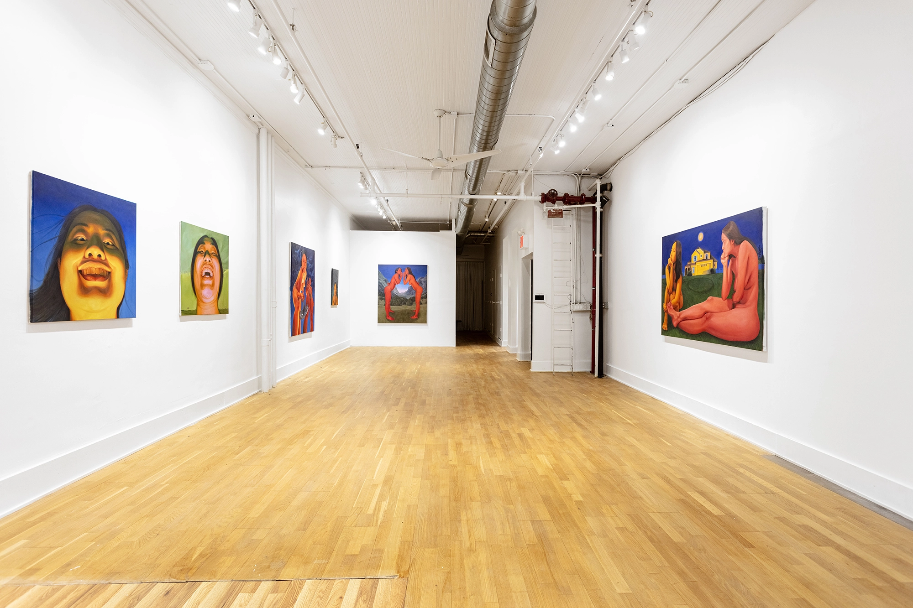

Wu's paintings unsettle like a phone camera one didn't expect to be front-facing -- when the safety of a unidirectional, voyeuristic gaze is irrupted by a mirror held up against one's Big Head (2024) or the lasciviousness of one's own look.
Elsewhere turns the urgency to look into a humiliation ritual. Wu's subjects return our gaze with scorn, drawing us in scenarios of exclusion, contempt, and burial. Adept at producing scenarios of discomfiting viewing -- from her earlier paintings of oversexualized anime girls and disturbing mukbangers who implore the viewer to take a bite, to those from Elsewhere -- Wu exposes the brutal power dynamics behind the desire for pleasure, and turns the act of viewing from one of subject creation to one of subject destruction. The viewers are alienated and unmade by their desire to have a taste of the other.


Wu undresses the art historical obsession with deciphering symbols, exposing it for an anxious attachment to knowability. If art historians have pored over the signification of Alfred Stieglitz's Equivalents -- debating whether his clouds index the "existence of a reality behind and beyond" the world of appearances or "the absence of the world and its objects, supplanted by the sign" -- Wu interrupts such equivocation in Secret in the Sky (2024).
The subject in Wu's painting blocks the view of the sky and reveals the interpretation of clouds to be a vulgar wish to be let in on a secret. The secret in the sky is that there is no Great Outside at the end of the clouds. The will to decode, to strip a painting bare to the grand meaningful- or meaninglessness of the world returns as a mischievous, oneiric whisper: you have been walking around without your pants on.



The lack of a center or localizable meaning is also evident in Wicked Mountains (2024), A Lawn Fire (2024), and DIGGERS (2024). If Wu literally leaves a void in the center of the canvas in A Lawn Fire, her pentagonal compositions in Wicked Mountains and DIGGERS outline the shape of a house but leave it unoccupied.
The whispering giantesses in Wicked Mountains bend their backs to form the pinnacle of a roof, but the house shaped by their bodies disappears in an infinite recession into the background of the landscape, leaving behind only a uniform, globular shadow suggestive of a lack.
While the displacement of the home in most of Wu's paintings echoes Freud's classic formulation of the uncanny -- the return of the repressed that turns the familiar strange, the destabilization of the space of domesticity and comfort into a threatening no-place -- DIGGERS finds the viewers at the source of all anxieties: the threat of mortality that looms over all fears of secrecy, displacement, and castration.



Down in the hole, in Wu's fantastic and nightmarish visions, one can't help but hear a clear echo of Beckett: At me too someone is looking, of me too someone is saying, He is sleeping, he knows nothing. Let him sleep on. Not unlike Vladimir, our desire to decode and decipher hides the futility of such endeavor.

